De la biologie moléculaire à l'écologie globale, en quinze chapitres conservés mot pour mot : classification, ruche, anatomie, société, miel, pollinisation, phéromones, danse et menaces. Un superorganisme vieux de 100 millions d'années, pilier de la biodiversité.
« Si les abeilles disparaissaient de la Terre, l'humanité n'aurait plus que quatre ans à vivre. » — une phrase apocryphe, mais un avertissement réel.
Un insecte de 1 milligramme de cerveau, et toute une civilisation.
Ce dossier reprend mot pour mot l'étude enrichie de PhantomBlast sur L'Abeille — Apis mellifera, de la biologie moléculaire à l'écologie globale : 15 chapitres, de la classification à l'apithérapie. Chaque chiffre a été vérifié ; les nuances et corrections sont signalées en encadrés « anti-intox », sans toucher au texte d'origine.
Apparition des abeilles au Crétacé, en co-évolution avec les plantes à fleurs.
Trois castes, six métiers, aucune autorité centrale : une intelligence distribuée.
Du nectar transformé par les enzymes — un aliment qui se conserve presque indéfiniment.
Varroa, frelon asiatique, pesticides, climat : un pilier de la biodiversité menacé.
Objectifs pédagogiques
Comprendre l'abeille comme un système — moléculaire, social et écologique.
Comprendre
L'anatomie, le cycle de vie et le déterminisme de caste — comment l'alimentation, et non les gènes, fabrique une reine.
Relier
De l'alvéole hexagonale à la pollinisation mondiale : la même logique d'efficacité, des mathématiques à l'écosystème.
Garder l'esprit critique
Distinguer le fait établi de l'allégation. Derrière chaque chiffre, une source — ou une nuance signalée.
Chapitre 1
Classification Scientifique
01
L'abeille domestique appartient à un groupe d'insectes aux caractéristiques bien définies. Sa classification reflète sa place unique dans l'évolution des arthropodes.
L'arbre du vivant — d'Apis mellifera
Niveau
Taxon
Caractéristique
🌍 Règne
Animalia
Organisme eucaryote hétérotrophe
🦴 Embranchement
Arthropodes
Exosquelette en chitine, appendices articulés
🪶 Ordre
Hyménoptères
4 ailes membraneuses (hymen = membrane en grec)
🐝 Famille / Espèce
Apidae / Apis mellifera
Mellifera = "qui porte le miel" (latin)
> 20 000Espèces d'abeillesdans le monde
100 MaApparitionau Crétacé
1 seuleÉlevée à grande échelleApis mellifera
1.1 Évolution — Du Crétacé à nos jours
Originaire d'Afrique et d'Europe, Apis mellifera est issue d'une longue histoire évolutive qui a transformé une guêpe prédatrice en pollinisatrice indispensable.
①
Le Crétacé — ~100 Ma
Melittosphex burmensis, premier ancêtre piégé dans l'ambre, présente des caractéristiques mixtes guêpe/abeille. Coïncide avec l'apparition des Angiospermes — début d'un partenariat écologique durable.
②
Diversification — ~60 Ma (Paléogène)
Après l'extinction des dinosaures, diversification massive des espèces solitaires (abeilles maçonnes, coupeuses de feuilles). Colonisation progressive de l'Europe, de l'Afrique et de l'Amérique du Nord.
③
Socialité — ~30 Ma
Étape cruciale : abandon du mode solitaire, mise en place de la division du travail reine/ouvrières. Apparition des premiers bourdons et ancêtres des abeilles mélipones (trigones).
④
Ère Moderne — 10 Ma → aujourd'hui
Dispersion mondiale d'Apis mellifera, introduite en Amérique et Australie à partir de 1600. Développement de l'apiculture. Aujourd'hui : confrontation aux menaces modernes (pesticides, Varroa, changement climatique).
📖 Mémo lexique
Arthropode
Animal à corps segmenté, exosquelette chitineux et pattes articulées
Hyménoptère
Insecte à 4 ailes membraneuses (abeilles, fourmis, guêpes)
Apidés
Famille regroupant les abeilles sociales productrices de miel
Taxinomie
Science de la classification du vivant
Angiospermes
Plantes à fleurs — apparues en même temps que les abeilles modernes
Chapitre 2
L'Habitat — La Ruche
02
2.1 Ruche naturelle
Les abeilles sauvages occupent des cavités naturelles : creux d'arbres, rochers, terriers. Elles y construisent des rayons de cire suspendus verticalement.
30–60 LVolume idéalde la cavité
35 °CTempérature couvainmaintenue en permanence
FixeRayons de cireattachés à la paroi
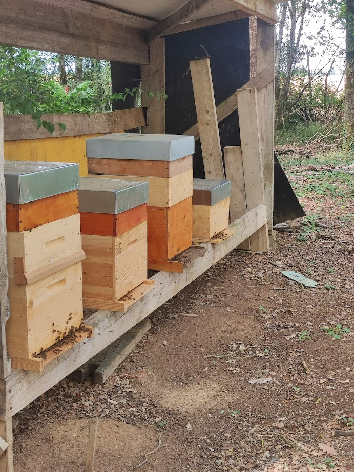
Photographie — un rucher de ruches Dadant
Organisation verticale du nid naturel
⬆
1 — Stockage du miel (zone supérieure)
Zone la plus chaude (chaleur montante). Miel operculé pour la conservation à long terme. Réserve énergétique principale.
🥚
2 — Zone de couvain (cœur du nid)
Juste sous le miel. La reine y pond. Température très précise : 34-35 °C. Contient œufs, larves et nymphes en développement.
🌼
3 — Stockage du pollen
En bordure immédiate du couvain. Permet le nourrissage rapide des larves en protéines. C'est le "pain des abeilles".
🔒
4 — Zone inférieure et entrée
Abeilles gardiennes et ventileuses. Entrée étroite en bas — protection contre les courants froids et les prédateurs.
2.2 Ruche artificielle (Dadant)
Inventée au XIXe siècle, la ruche Dadant révolutionne l'apiculture en permettant l'extraction du miel sans détruire la colonie.
🏠
Toit & Couvre-cadres
Protègent la colonie des intempéries et assurent l'isolation thermique.
🍯
La Hausse
Étage amovible supérieur. Les abeilles y stockent le surplus de miel operculé — récolte de l'apiculteur sans perturber le couvain.
🚫
Grille à Reine
Empêche la reine de pondre dans les hausses. Garantit que les cadres de hausse ne contiennent que du miel.
🫀
Corps de Ruche
10 à 12 grands cadres mobiles : couvain (œufs, larves, nymphes) + réserves alimentaires. Cœur vivant de la colonie.
🔬
Tiroir Varroa
Plateau grillagé coulissant. Permet la surveillance de l'infestation par Varroa destructor et maintient l'hygiène de la ruche.
2.3 Géométrie parfaite des alvéoles
Les abeilles construisent des alvéoles hexagonales — l'hexagone est la forme géométrique optimale permettant de couvrir une surface avec le minimum de cire tout en offrant une résistance maximale. Cette propriété mathématique a été démontrée formellement en 1999 par Thomas Hales (conjecture du rayon de miel).
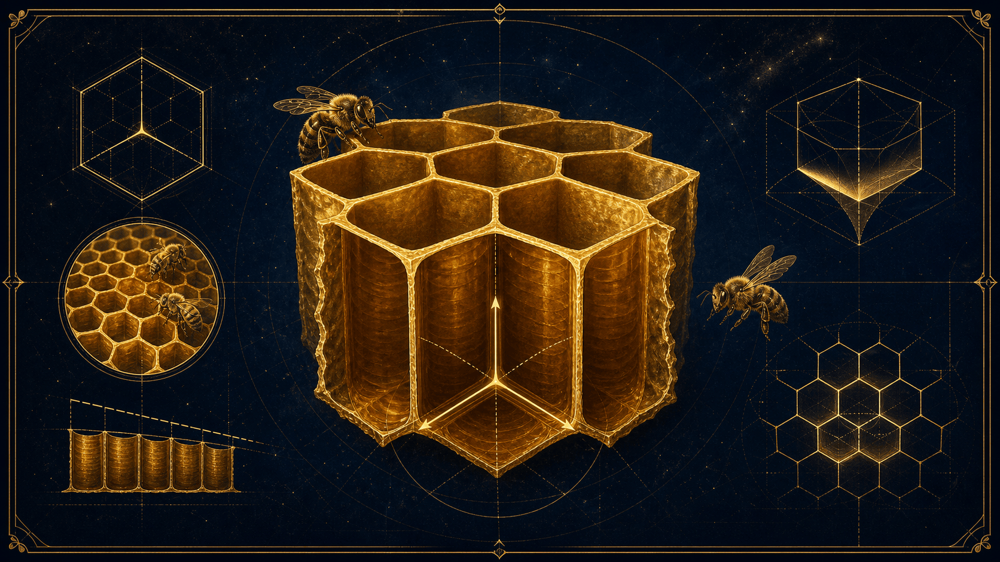
La géométrie de l'alvéole — l'hexagone, optimum mathématique du rayon
~5,4 mmDiamètre alvéolecalibré pour le couvain
13°Inclinaison anti-fuiteempêche l'écoulement du nectar
0,073 mmÉpaisseur paroiprécision remarquable
💡 Angle de 120° — La perfection géométrique
Dans un pavage hexagonal, trois hexagones se rejoignent en un point. Un tour complet (360°) divisé par 3 donne exactement 120° — l'angle interne de l'hexagone régulier. Cet angle est le plus stable pour la répartition des tensions (on le retrouve dans les bulles de savon et les cristaux).
💡 Angle de 13° — L'inclinaison pratique
Les alvéoles ne sont pas horizontales : elles sont inclinées vers le haut d'environ 13° de l'entrée vers le fond. Cette pente empêche le nectar liquide de s'écouler avant d'être transformé en miel, et répartit mieux le poids du miel sur la paroi centrale du rayon.
Interactif · géométrie
Pourquoi l'hexagone ? Le moins de cire pour le plus d'espace
Comparez les trois formes qui pavent un plan sans laisser de vide. Pour une aire donnée, l'hexagone a le plus petit périmètre — donc le moins de cire.
Démonstration : conjecture du nid d'abeille, Thomas Hales (1999). Appareil critique →
📖 Mémo lexique
Alvéole
Cellule hexagonale de cire, unité de base du rayon
Rayon de cire
Feuille de cire composée d'alvéoles dos-à-dos
Hausse
Étage supérieur de la ruche dédié au stockage du miel
Apiculteur
Éleveur d'abeilles domestiques
Conjecture du rayon de miel
Théorème démontré en 1999 — l'hexagone est la forme la plus efficace pour paver un plan
Chapitre 3
Anatomie — Morphologie
03
Comme tous les insectes, l'abeille possède un corps divisé en 3 tagmes : tête, thorax, abdomen. Son corps est protégé par un exosquelette en chitine, à la fois léger, résistant et imperméable.
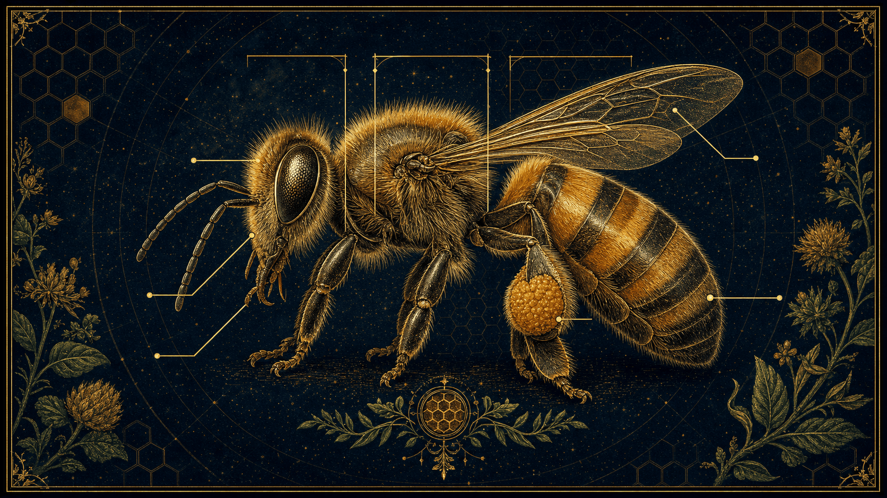
Anatomie d'Apis mellifera — les trois tagmes
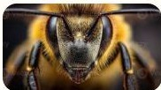
Photographie — la tête : yeux composés et pilosité
👁
Tête
▸ 2 yeux composés — vision en mosaïque, détectent les UV
▸ 3 ocelles — détection de la lumière et de l'horizon
▸ Trompe de succion (glossa) — jusqu'à 7 mm de long
▸ Mandibules — manipulation de la cire et des autres abeilles
🪶
Thorax
▸ 3 paires de pattes (6 pattes)
▸ 2 paires d'ailes membraneuses couplées
▸ Pattes postérieures : corbeilles à pollen (corbicula)
▸ Crochets unguaux pour s'accrocher aux fleurs
▸ Battement d'ailes : 200–250 fois/seconde
🍯
Abdomen
▸ Jabot mellifère — transport du nectar (40 mg max)
▸ 4 paires de glandes cirières (sternites 4-7)
▸ Glandes de Nassanoff — phéromones d'orientation
▸ Glandes de Koschevnikov — phéromones d'alarme
▸ Dard barbelé (ouvrière) — mortel pour l'abeille après piqûre
Système sensoriel avancé
L'abeille possède un équipement sensoriel remarquablement sophistiqué pour sa taille. Ses antennes sont dotées de 170 types de récepteurs olfactifs différents — elle peut détecter des phéromones à des concentrations de l'ordre du nanogramme. Ses yeux composés perçoivent les ultraviolets, ce qui lui permet de localiser le nectar caché sur les pétales.
🔬 Le cerveau de l'abeille
Bien que ne pesant que 1 mg, le cerveau de l'abeille contient environ 1 million de neurones. Il lui permet d'apprendre, de mémoriser des odeurs et des formes, de naviguer sur plusieurs kilomètres en se repérant au soleil, et d'exécuter des danses complexes encodant direction et distance. Des études récentes suggèrent même qu'elle possède une forme de conscience subjective rudimentaire.
📖 Mémo lexique
Tagme
Grande région du corps d'un arthropode (tête, thorax, abdomen)
Corbicula
Panier à pollen sur la 3e paire de pattes, formé de soies rigides
Jabot
Poche extensible permettant le transport du nectar — se vide dans la ruche
Ocelle
Œil simple permettant la perception de la lumière et la stabilisation du vol
Phéromone
Substance chimique assurant la communication entre individus
Glossa
Langue extensible de l'abeille utilisée pour aspirer le nectar
Chapitre 4
Cycle de Vie — Les 4 Stades
04
L'abeille subit une métamorphose complète (holométabole) en 4 stades. La durée de développement varie selon la caste — différence déterminée principalement par l'alimentation (gelée royale) et non par la génétique.
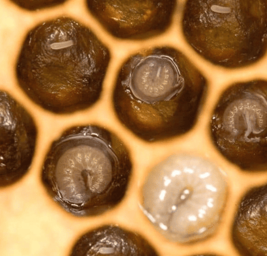
Photographie — le couvain : larves dans les alvéoles
🥚
Œuf — Jours 1 à 3
La reine pond jusqu'à 2 000 œufs par jour. L'œuf (~1,3 mm) est déposé verticalement au fond d'une alvéole nettoyée. Un œuf fécondé donnera une ouvrière ou une reine ; un œuf non fécondé, un faux-bourdon.
🐛
Larve — Jours 4 à 9
Nourrie de gelée royale pendant les 3 premiers jours (toutes castes). Ensuite, les ouvrières reçoivent de la bouillie (pollen + miel), la future reine reçoit de la gelée royale toute sa vie. La larve mue plusieurs fois et grossit rapidement.
🫘
Nymphe (Pupe) — Jours 10 à 21
L'alvéole est operculée. La larve tisse un cocon. Métamorphose complète : dissolution des tissus larvaires et reconstitution de l'ensemble des organes adultes — ailes, yeux composés, appareil digestif, système nerveux.
🐝
Adulte (Imago) — Jour 21+
L'abeille ronge l'opercule et émerge. Elle est couverte de duvet qu'elle perd progressivement. Elle commence par nettoyer sa cellule, puis progresse dans la hiérarchie des métiers.
21 jOuvrièredéveloppement standard
16 jReinegelée royale = + rapide
24 jFaux-bourdondéveloppement le plus long
🔬 Le déterminisme de caste
La différenciation reine/ouvrière n'est pas génétique mais épigénétique. Toutes les larves femelles sont génétiquement identiques. C'est la royalactine présente dans la gelée royale qui active la voie de signalisation mTOR (et inhibe FOXO), accélérant le développement ovarien et augmentant la taille corporelle. Cette découverte (Kamakura, 2011) est une révolution dans la biologie du développement.
Bouchon de cire fermant une alvéole contenant une nymphe ou du miel mûr
Gelée royale
Sécrétion des glandes hypopharyngiennes des nourrices — aliment déterminant la caste
Imago
Stade adulte d'un insecte après métamorphose complète
Royalactine
Protéine spécifique de la gelée royale activant la différenciation en reine via mTOR
Chapitre 5
La Société — Hiérarchie et Castes
05
La colonie d'abeilles est un superorganisme de 40 000 à 80 000 individus structuré en 3 castes distinctes. Sa cohésion repose sur un réseau dense de phéromones et de comportements collectifs, sans aucune autorité centralisée.
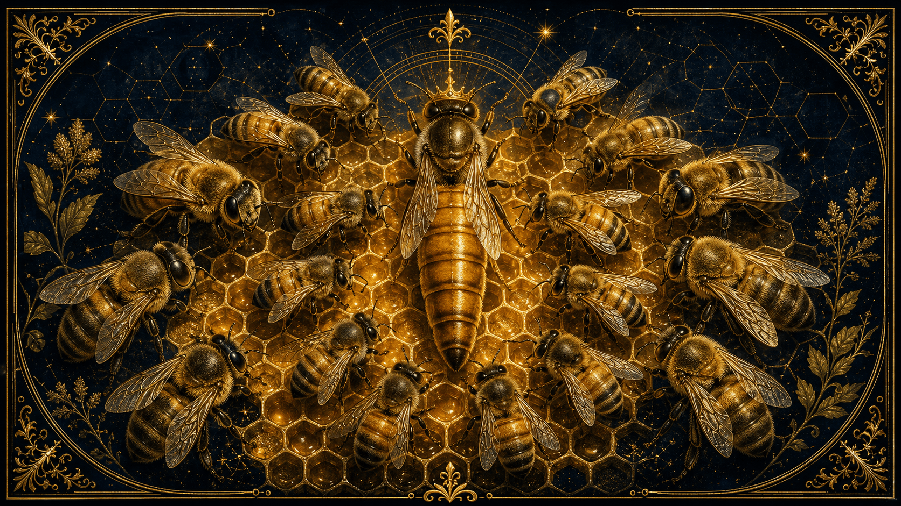
Le superorganisme — reine, ouvrières et faux-bourdons
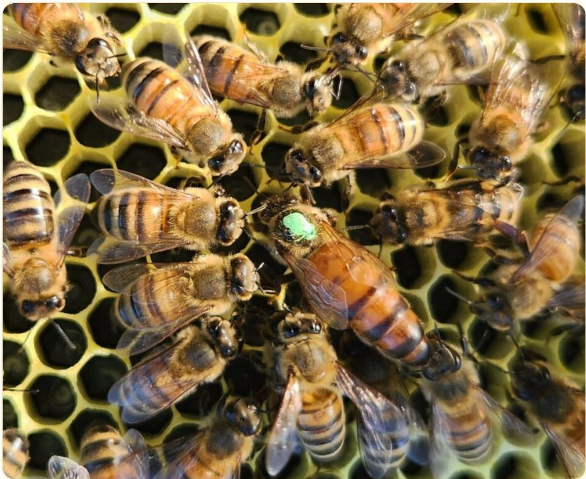
Photographie — la reine, marquée, au cœur de la colonie
👑
Reine
Population : 1 seule par ruche (parfois 2 lors de la transition)
Taille : 18–22 mm — la plus grande de la colonie
Ponte : 1 500 à 2 000 œufs par jour au pic printanier
Durée de vie : 3 à 5 ans (vs 5-6 semaines pour les ouvrières)
Phéromone : 9-ODA — inhibe les ovaires des ouvrières, attire les mâles
Fécondation : Vol nuptial unique avec 10-20 faux-bourdons, stockage dans la spermathèque
🪰
Faux-bourdons
Population : 200 à 1 000 mâles (printemps/été uniquement)
Origine : Œufs non fécondés — parthénogenèse, individus haploïdes
Rôle unique : Féconder la reine lors du vol nuptial
Expulsion : En automne, chassés par les ouvrières — meurent de faim
Anatomie : Pas de dard, pas de corbicula, yeux composés très larges
🛠
Ouvrières
Population : 40 000 à 80 000 femelles stériles
Taille : 12–15 mm
Durée de vie : 5–6 semaines en été (usure), 4–6 mois en hiver (hivernage)
Stérilité : Ovaires inhibés par la phéromone royale 9-ODA
Dard : Barbelé — reste planté dans la peau, injecte venin + phéromone d'alarme
Rôle : Toutes les tâches de la colonie selon l'âge (polyéthisme)
🐝 L'essaimage — Division de la colonie
Lorsque la colonie devient trop peuplée (printemps), une nouvelle reine est élevée. L'ancienne reine quitte la ruche avec 30 à 50 % des ouvrières pour former un essaim. L'essaim se pose temporairement (en grappe sur une branche) et envoie des éclaireuses chercher un nouveau nid. La décision finale se prend par consensus — les butineuses « dansent » pour défendre leur site favori jusqu'à ce qu'un accord soit atteint.
📖 Mémo lexique
Superorganisme
Colonie fonctionnant comme un seul organisme intégré — décisions collectives sans cerveau central
Phéromone royale (9-ODA)
Acide 9-oxo-trans-décénoïque — contrôle la physiologie de toute la colonie
Parthénogenèse
Développement d'un œuf non fécondé — faux-bourdons haploïdes (n=16 chromosomes)
Essaimage
Division de la colonie — l'ancienne reine part avec une partie des abeilles
Spermathèque
Organe de la reine stockant jusqu'à 6 millions de spermatozoïdes après le vol nuptial
Chapitre 6
Organisation du Travail — Les 6 Métiers
06
L'ouvrière change de rôle au cours de sa vie selon un ordre précis lié à sa maturation physiologique. On parle de polyéthisme d'âge. Chaque métier correspond à l'activation séquentielle de différentes glandes.
1
Nettoyeuse — Jours 1–3
Nettoie les alvéoles vides avec ses mandibules, les prépare pour la reine. Inspecte et enlève tout débris ou individu mort. C'est aussi l'étape d'apprentissage — l'abeille mémorise la morphologie de sa ruche.
2
Nourrice — Jours 4–12
Sécrète la gelée royale (glandes hypopharyngiennes matures). Nourrit les larves et la reine. C'est le poste le plus chronophage. Une nourrice visite une larve jusqu'à 1 300 fois par jour.
3
Cirière — Jours 13–18
Ses 4 paires de glandes cirières sont actives. Produit des écailles de cire, les malaxe avec ses mandibules. Construit et répare les rayons. Operculine le miel mûr et les nymphes.
4
Magasinière — Jours 16–20
Réceptionne le nectar des butineuses par trophallaxie. Malaxe le mélange, ajoute ses propres enzymes, dépose dans les alvéoles. Ventile pour accélérer l'évaporation.
5
Garde — Jours 18–21
Surveille l'entrée de la ruche. Identifie les congénères par l'odeur (phéromone de colonie). Attaque les intrus en les mordant et en piquant. Active ses glandes d'alarme si nécessaire.
6
Butineuse — Jours 21–42
Collecte nectar, pollen, propolis, eau. Rayon d'action : 3 km (max 14 km). 10 à 15 sorties par jour. Volume de miel produit en vie entière : 1/12e de cuillère à café. Usera ses ailes jusqu'à la mort.
📊 Les chiffres de la production
Une ouvrière butineuse produit en toute sa vie seulement 1/12e de cuillère à café de miel. Pour produire 1 kg de miel, la colonie doit effectuer 2 millions de sorties et butiner 4 millions de fleurs. Un essaim de 80 000 abeilles peut produire entre 20 et 80 kg de miel par an dans de bonnes conditions.
📖 Mémo lexique
Polyéthisme d'âge
Division du travail selon l'âge au sein d'une société d'insectes
Propolis
Résine végétale aux propriétés antibactériennes — colmatage et désinfection de la ruche
Trophallaxie
Échange de nourriture bouche-à-bouche — permet la transmission d'enzymes
Butinage
Récolte du nectar, du pollen et d'autres ressources hors de la ruche
Corbicula
Panier à pollen sur les pattes postérieures — peut contenir jusqu'à 20 mg de pollen
Chapitre 7
Le Laboratoire de la Ruche — Miel et Cire
07
7.1 Production de la Cire
La cire est produite par 4 paires de glandes cirières situées sur la face ventrale de l'abdomen (sternites 4 à 7). Elle sort sous forme de petites écailles translucides que la cirière saisit avec ses pattes et malaxe pour la ramollir.
7–8 kgde miel consommépour produire 1 kg de cire
0,8 mgpar écaille de cireproduction unitaire
70 °CPoint de fusionde la cire d'abeille
Composition de la cire : esters d'acides gras (71 %), alcools (13 %), hydrocarbures (14 %), acides gras libres (1 %). Sa structure cristalline lui confère une résistance remarquable et une imperméabilité totale.
7.2 Transformation du Nectar en Miel
Le miel n'est pas du nectar stocké — c'est un nectar chimiquement transformé par les enzymes des abeilles. Le processus prend 7 à 10 jours et implique l'ensemble de la colonie.
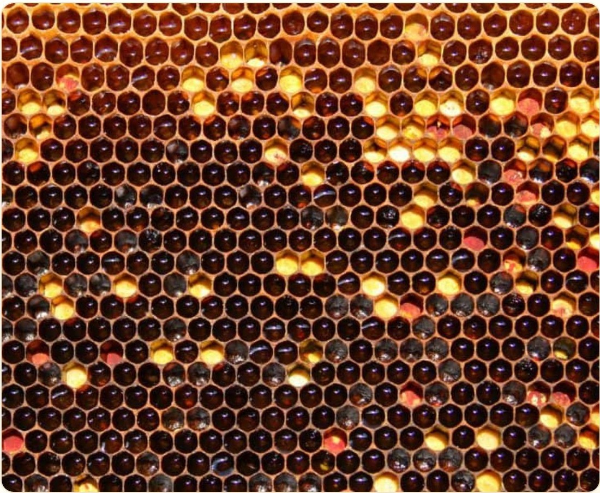
Photographie — un rayon gorgé de miel
①
Récolte du nectar
La butineuse aspire le nectar (80 % d'eau, 20 % saccharose) dans son jabot. Dès ce stade, la salive apporte des enzymes (invertase, glucose-oxydase).
②
Trophallaxie
Échange bouche-à-bouche entre 5 à 20 abeilles magasinières. Chaque passage enrichit le mélange en enzymes et permet une première évaporation.
③
Hydrolyse enzymatique
L'invertase transforme le saccharose en glucose + fructose. La glucose-oxydase produit du peroxyde d'hydrogène (antibactérien naturel). Le pH chute à ~3,9.
④
Évaporation
Ventilation forcée des alvéoles (battement d'ailes coordonné). L'humidité passe de 80 % à moins de 18 % — seuil en dessous duquel bactéries et levures ne peuvent se développer.
⑤
Operculation
Quand le miel est mûr (< 18 % d'eau), les cirières scellent l'alvéole avec un bouchon de cire. Le miel peut se conserver indéfiniment.
📖 Mémo lexique
Invertase
Enzyme qui coupe le saccharose en glucose + fructose (hydrolyse)
Glucose-oxydase
Enzyme produisant du peroxyde d'hydrogène — propriétés antiseptiques du miel
Hygroscopicité
Propriété du miel à absorber l'humidité — assure sa conservation naturelle
Operculation
Scellement d'une alvéole avec de la cire quand le miel est à moins de 18 % d'eau
Chapitre 8
Écologie — La Pollinisation Mondiale
08
Les abeilles sont indispensables à la reproduction de la majorité des plantes à fleurs et au maintien de la biodiversité mondiale. Elles assurent un service écosystémique dont la valeur économique est sans équivalent.
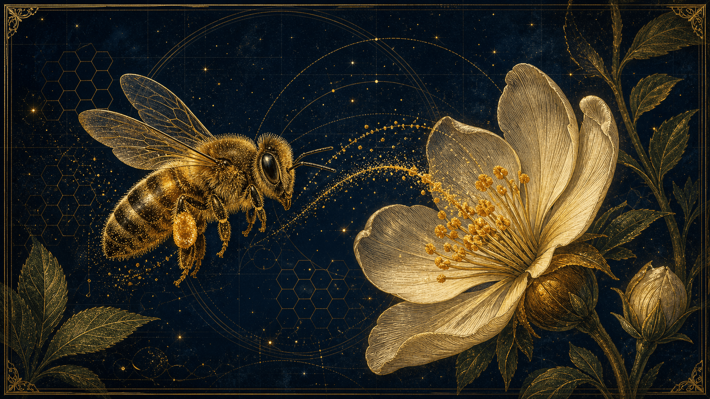
La pollinisation — cent millions d'années de co-évolution fleur-abeille
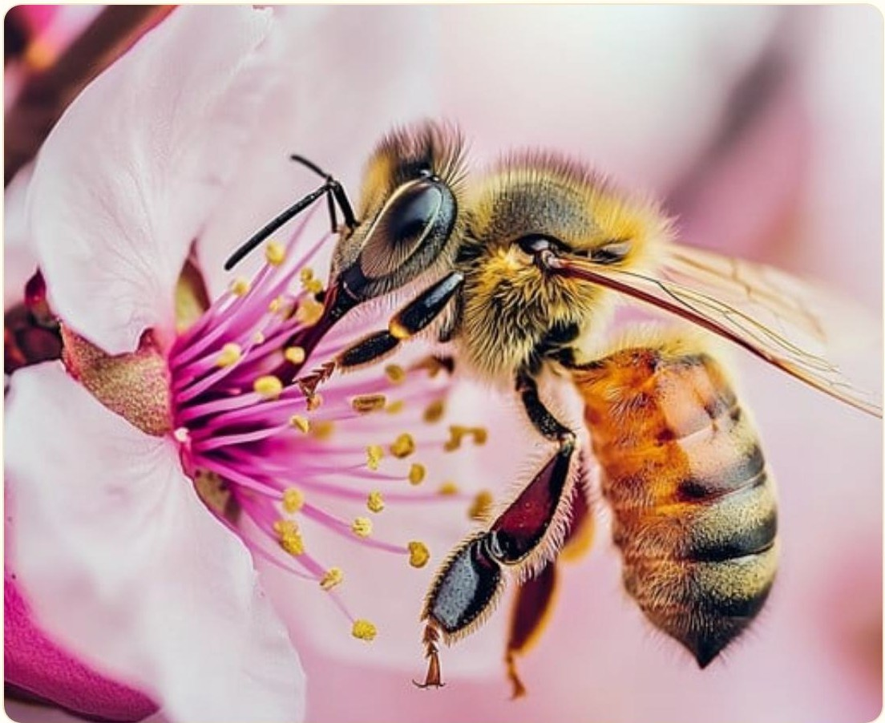
Photographie — le butinage et le transport du pollen
84 %des cultures européennesdépendent des pollinisateurs
153 Mrd €valeur mondiale annuelleservice de pollinisation (FAO)
1/3des calories humainesde plantes dépendant des pollinisateurs
3 kmrayon de butinage(max 14 km en milieu appauvri)
8.1 Mécanisme de la pollinisation
En butinant, l'abeille se couvre de grains de pollen chargés électrostatiquement par son corps velu. En visitant une autre fleur de la même espèce, elle dépose une partie du pollen sur le pistil (partie femelle), permettant la fécondation et la formation de graines et de fruits.
🌸 La co-évolution fleur-abeille
La fleur et l'abeille ont co-évolué pendant 100 millions d'années. Les fleurs ont développé des couleurs visibles dans les UV (invisibles à l'œil humain mais perçus par l'abeille), des guides nectarifères, des parfums spécifiques, et des formes adaptées à la morphologie des abeilles. L'abeille, en retour, a développé ses corbicules, sa trompe et son organe olfactif exceptionnel.
8.2 Pollinisateurs et biodiversité
Si les abeilles mellifères sont les pollinisateurs les plus connus, elles ne sont pas les seules. Les 20 000+ espèces d'abeilles sauvages (dont 1 000 espèces en France), les bourdons, les papillons, les syrphes et même certains oiseaux et chauves-souris participent à la pollinisation. Chaque espèce végétale a souvent ses pollinisateurs préférentiels.
📖 Mémo lexique
Pollinisation
Transport du pollen de l'étamine (organe mâle) vers le pistil (organe femelle) d'une fleur
Service écosystémique
Bénéfice fourni gratuitement par la nature à l'humanité (eau, air, pollinisation...)
Biodiversité
Variété du vivant à tous les niveaux : gènes, espèces, écosystèmes
Co-évolution
Évolution simultanée de deux espèces qui exercent des pressions sélectives l'une sur l'autre
Chapitre 9
Thermorégulation — La Ruche Homéotherme
09
La colonie maintient une température constante de 34–36 °C au centre du couvain toute l'année. C'est un exemple remarquable d'homéothermie collective chez un invertébré, sans organe central de contrôle.
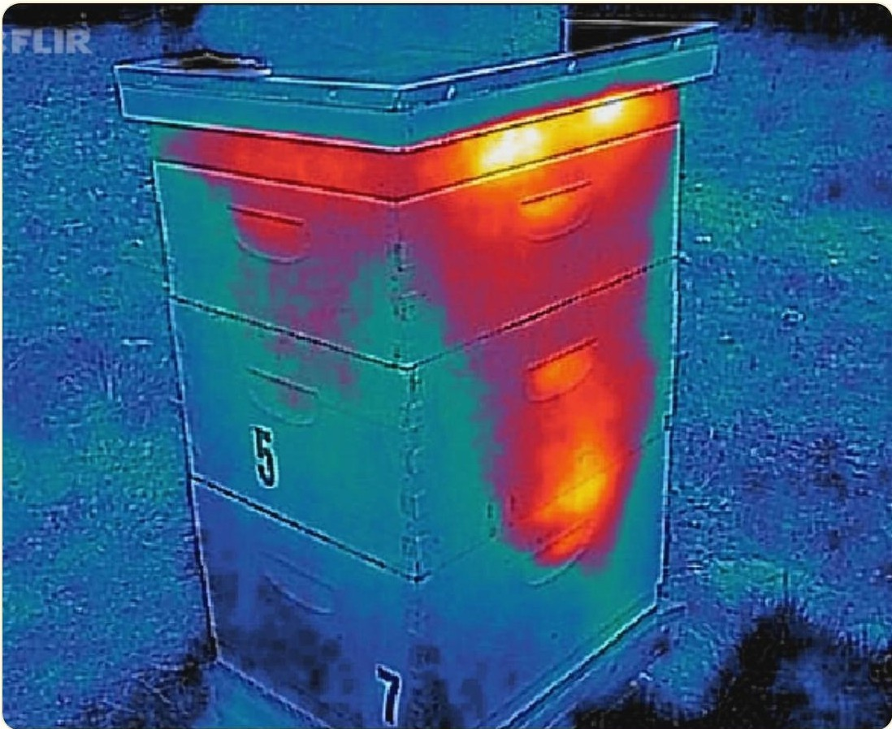
Thermographie FLIR — la chaleur de la grappe au cœur de la ruche
34–36 °CTempérature couvainmaintenue en permanence
Par temps froid, les ouvrières forment une grappe hivernale sphérique. Elles contractent leurs muscles thoraciques sans actionner leurs ailes — contraction isométrique générant de la chaleur (comme le frisson chez les mammifères).
La grappe se resserre ou s'élargit pour réguler la température. Les abeilles en périphérie se refroidissent progressivement puis rejoignent le centre — rotation continue garantissant la survie de toutes.
☀️ Refroidissement estival
Par fortes chaleurs, des ouvrières ventileuses se positionnent en chaîne de l'entrée vers le cœur de la ruche et battent des ailes coordonnément (comme des ventilateurs en série).
Simultanément, d'autres déposent des gouttelettes d'eau sur les alvéoles. L'évaporation absorbe la chaleur latente — effet climatiseur naturel permettant de tenir même quand la température extérieure dépasse 45 °C.
🔬 Intelligence collective sans chef
La thermorégulation de la ruche est un exemple d'intelligence distribuée : aucune abeille ne "décide" de la stratégie globale. Chaque individu réagit à des stimuli locaux simples (trop chaud/froid, manque d'air) selon des règles comportementales encodées génétiquement. L'ensemble produit un comportement sophistiqué et adaptatif à l'échelle de la colonie.
📖 Mémo lexique
Homéothermie
Capacité à maintenir une température interne constante malgré les variations externes
Grappe hivernale
Formation sphérique des abeilles en hiver pour concentrer et conserver la chaleur
Contraction isométrique
Contraction musculaire sans déplacement — produit de la chaleur sans mouvement visible
Chaleur latente d'évaporation
Énergie thermique absorbée par l'évaporation d'un liquide (principe du climatiseur)
Chapitre 10
Communication Chimique — Les Phéromones
10
La cohésion sociale de la ruche repose sur un réseau complexe de signaux chimiques. Les phéromones sont sécrétées par des glandes spécialisées et transmises par contact, par l'air et par la trophallaxie. On distingue deux types : les phéromones de primer (effets physiologiques durables) et de releaser (comportements immédiats).
Émise par les glandes mandibulaires de la reine. Effet double : inhibe le développement des ovaires des ouvrières (phéromone de primer) et attire les faux-bourdons lors du vol nuptial (phéromone de releaser). Sa réduction ou disparition déclenche l'élevage d'une nouvelle reine en urgence.
🧭
Glande de Nassanoff (phéromone d'orientation)
Située sur l'abdomen (entre les tergites 6 et 7). Mélange de géraniol, néraldol et acide nerolique. Les abeilles exposent la glande en relevant l'abdomen et battent des ailes pour diffuser. Guide les butineuses vers l'entrée, signale une source d'eau ou de nourriture, facilite le rassemblement lors de l'essaimage.
Émise par la glande à venin lors d'une piqûre. Odeur caractéristique de banane. Recrute rapidement d'autres gardiennes et incite à l'attaque collective. Explique pourquoi une première piqûre entraîne d'autres piqûres au même endroit. La 2-heptanone, émise par les mandibules, a un effet anesthésiant sur les petits intrus.
🍼
Phéromone de Couvain (acides gras saturés)
Émise par les larves. Signale aux nourrices leur présence et leur stade de développement. Inhibe le comportement de butinage des jeunes ouvrières (les maintenant à la ruche) et active les glandes nourricières. Quand le couvain est absent, des ouvrières dites "couvain-less" peuvent activer leurs ovaires.
📖 Mémo lexique
9-ODA
Acide 9-oxo-trans-2-décénoïque — composant principal de la phéromone royale
Glande de Nassanoff
Glande exocrine abdominale produisant des phéromones d'orientation
Acétate d'isoamyle
Molécule volatile à odeur de banane — composant principal de la phéromone d'alarme
Phéromone de primer
Phéromone modifiant physiologiquement le récepteur (ex : inhibition des ovaires)
Phéromone de releaser
Phéromone déclenchant un comportement immédiat et réversible
Chapitre 11
Les Autres Produits de la Ruche
11
L'abeille ne produit pas que du miel et de la cire. La ruche est un véritable laboratoire biochimique produisant plusieurs substances aux propriétés remarquables, utilisées depuis des millénaires par l'humanité.
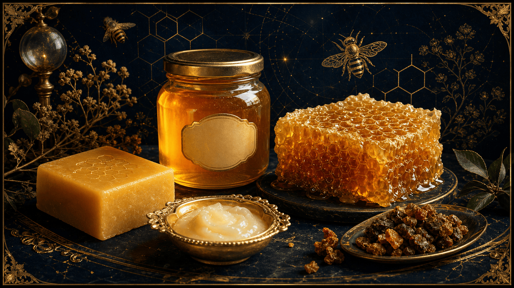
Les produits de la ruche — miel, cire, propolis, gelée royale, pollen, venin
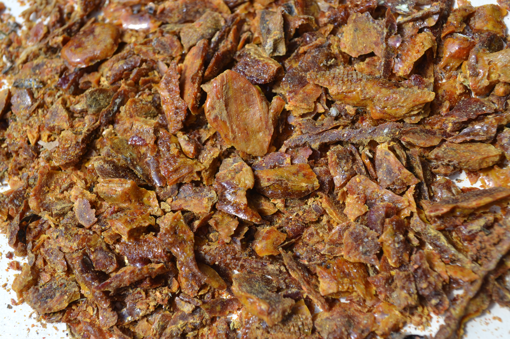
Photographie — la propolis brute, « mortier » de la ruche
🌿
Propolis — Mortier et antibiotique naturel
Résine végétale récoltée sur les bourgeons d'arbres (peupliers, bouleaux, conifères), mélangée à de la cire et des enzymes salivaires. Sert de mortier pour boucher les fissures et d'antibiotique naturel. Contient plus de 300 composés : flavonoïdes, terpènes, acides phénoliques. Utilisée pour momifier les intrus trop grands pour être évacués.
👑
Gelée Royale — Nourriture royale
Sécrétée par les glandes hypopharyngiennes des nourrices. Blanche, crémeuse, au goût acide. Toutes les larves en reçoivent pendant 3 jours. La future reine en est nourrie toute sa vie. Composition : eau 60-70 %, protéines 9-18 % (dont royalactine), sucres, lipides, vitamines. Détermine à elle seule la différenciation en reine.
🌾
Pain d'abeille (pollen fermenté)
Pollen compacté dans les corbicules avec nectar et sécrétions salivaires. Fermente dans les alvéoles grâce aux bactéries lactiques (Lactobacillus) — le "pain d'abeille" est plus digestible et plus riche que le pollen frais. Source principale de protéines, vitamines et minéraux de la colonie. Sans pollen, aucun couvain n'est possible.
💉
Venin (Apitoxine) — Arsenal défensif
Produit par les glandes à venin. Composé de mélittine (50 % — perfore les membranes), phospholipase A2, hyaluronidase, apamine (neuropeptide). Quantité par piqûre : 50–100 μg. Le dard barbelé reste planté et continue d'injecter venin + phéromone d'alarme — retirer rapidement le dard par grattage (pas en pinçant).
📖 Mémo lexique
Flavonoïde
Molécules végétales antioxydantes et antibactériennes — présentes dans la propolis
Royalactine
Protéine de la gelée royale activant la différenciation en reine via la voie mTOR
Pain d'abeille
Pollen fermenté par bactéries lactiques — plus digestible et riche en probiotiques
Mélittine
Principal peptide du venin d'abeille — perfore les membranes et provoque l'inflammation
Apithérapie
Utilisation thérapeutique des produits de la ruche (miel, propolis, venin, gelée royale)
Chapitre 12
Les Menaces — Prédateurs et Disparition
12
Les colonies d'abeilles font face à une convergence de menaces biologiques et anthropiques sans précédent. Le Colony Collapse Disorder (CCD), syndrome de l'effondrement des colonies, a causé la disparition de 30 à 50 % des ruches en Europe et en Amérique du Nord depuis les années 2000.
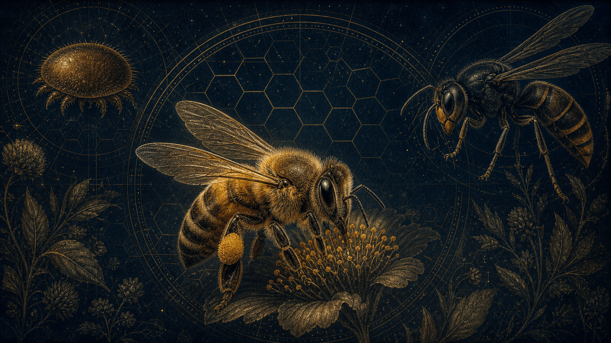
Les menaces — Varroa, frelon asiatique, pesticides, climat
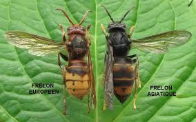
Frelon européen vs frelon asiatique
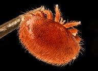
L'acarien Varroa destructor
12.1 Menaces biologiques
🕷
Varroa destructor — L'ennemi numéro 1
Acarien parasite arrivé d'Asie (années 1970-80). Se nourrit de l'hémolymphe des abeilles et des larves en se glissant sous les tergites abdominaux. Transmet des virus (ailes déformées, paralysie aiguë). Principale cause de mortalité mondiale des colonies. Sans traitement, une ruche infestée meurt en 2-3 ans. Traitement : acide oxalique en hiver.
🐝
Frelon asiatique (Vespa velutina)
Espèce invasive arrivée en France en 2004, désormais présente dans 95 % du territoire. S'installe à proximité des ruches et décapite les ouvrières en vol pour nourrir ses larves. Une colonie de frelons peut décimer une ruche de 50 000 abeilles. Classé danger écologique majeur en Europe. Les abeilles asiatiques ont développé des comportements défensifs (boule thermique) — pas les européennes.
12.2 Menaces anthropiques
☠️
Néonicotinoïdes — Insecticides systémiques
Imidaclopride, clothianidine, thiaméthoxame — neurotoxiques agissant sur les récepteurs nicotiniques de l'acétylcholine. Perturbent l'orientation, la mémoire, les comportements de danse et d'apprentissage. Subletaux à doses de terrain mais cumulatifs. Interdits en Europe depuis 2018 pour la plupart, mais dérogations persistantes et substituts controversés.
🌡
Changement climatique et décalage phénologique
Les fleurs fleurissent 2 à 3 semaines plus tôt qu'il y a 50 ans, avant le réveil printanier des colonies. Les hivers doux favorisent la reproduction de Varroa pendant la saison froide. Les sécheresses réitérées réduisent disponibilité en nectar et pollen. Les événements climatiques extrêmes détruisent les milieux floraux.
🌾
Destruction des habitats
Monocultures intensives, artificialisation des terres, disparition des haies, prairies fleuries et jachères. La désertification florale prive les colonies de la diversité alimentaire nécessaire à leur immunité. Un abeille nourrie avec un seul type de pollen a une durée de vie réduite de 30 %.
📖 Mémo lexique
CCD (Colony Collapse Disorder)
Syndrome d'effondrement des colonies — disparition soudaine et massive des ouvrières
Néonicotinoïde
Insecticide systémique neurotoxique bloquant les récepteurs nicotiniques — imprègne toute la plante
Hémolymphe
Liquide circulatoire des insectes — équivalent du sang, sans hémoglobine
Espèce invasive
Espèce introduite hors de son aire naturelle, sans prédateurs locaux — prolifération incontrôlée
Décalage phénologique
Désynchronisation entre les calendriers biologiques de deux espèces interdépendantes
Chapitre 13
Communication par la Danse — Le Langage des Abeilles
13
Découverte par Karl von Frisch (Prix Nobel de physiologie 1973), la danse des abeilles est l'un des systèmes de communication animale les plus sophistiqués jamais découverts. C'est le seul exemple connu de communication symbolique chez un invertébré — le signal représente un objet absent dans l'espace et le temps.
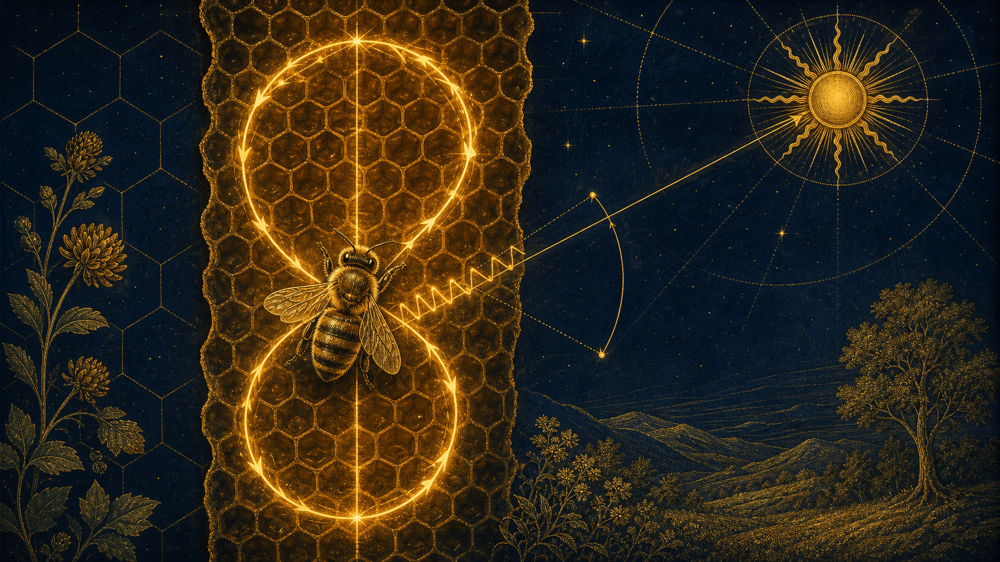
La danse en huit — direction (angle solaire) et distance (durée)
Danse en Rond
Source < 50 mètres
L'abeille tourne en cercles alternés gauche/droite sans direction précise. Indique une source proche. Les spectatrices captent l'information par contact, par les phéromones déposées et par les vibrations.
Le parfum du nectar transporté guide les recrues vers la bonne espèce florale.
Danse en Huit (Waggle Dance)
Source > 50 mètres
Figure en huit avec une course droite centrale (le « trot frétillant »). L'angle de la course par rapport à la verticale encode la direction par rapport au soleil. La durée encode la distance.
Les vibrations abdominales à 200-300 Hz et les émissions sonores renforcent le message. Les recrues « lisent » la danse par toucher et vibration (organe de Johnston).
AngleDirection encodéepar rapport à la verticale = angle vs soleil
~1 sec≈ 1 km de distancedurée de la course droite
200–300 HzFréquence vibrationsignaux mécaniques de la danseuse
Interactif · waggle dance
L'angle qui dit le soleil
Sur le rayon vertical, l'angle de la course frétillante par rapport à la verticale reproduit l'angle de la direction de la nourriture par rapport au soleil. Changez l'angle.
PhantomBlast a poussé l'idée plus loin : un simulateur de la danse des abeilles qui place une vraie carte et la position réelle du soleil, et traduit la danse en huit en cap sur le terrain.
L'organe de Johnston est un récepteur mécano-sensoriel situé dans le pédicelle de l'antenne. Il est composé de milliers de cellules sensorielles (scolopophores) capables de détecter les vibrations de l'air et du substrat avec une précision extraordinaire. C'est grâce à lui que les recrues, dans l'obscurité totale de la ruche, peuvent décoder les signaux de la danseuse.
🏆 Une découverte Nobel
Karl von Frisch a passé 30 ans à décoder le langage des abeilles. Sa découverte de 1946 — que la danse encode à la fois la direction et la distance d'une source — a été contestée pendant des décennies avant d'être définitivement confirmée. Elle lui a valu le Prix Nobel de médecine et physiologie en 1973, partagé avec Nikolaas Tinbergen et Konrad Lorenz.
13.2 Mémoire et apprentissage
L'abeille possède une mémoire spatiale et olfactive à long terme remarquable. Elle peut mémoriser jusqu'à 7 odeurs florales différentes, naviguer sur plusieurs kilomètres en utilisant le soleil comme compas, et corriger sa trajectoire en tenant compte du mouvement apparent du soleil dans le ciel (horloge circadienne interne de 24h).
📖 Mémo lexique
Waggle Dance
Danse en huit encodant direction et distance d'une ressource éloignée (> 50 m)
Organe de Johnston
Récepteur mécano-sensoriel de l'antenne — détecte les vibrations de la danseuse
Communication symbolique
Système où le signal représente un objet absent — très rare chez les non-humains
Scolopophore
Cellule sensorielle de l'organe de Johnston spécialisée dans la détection des vibrations
Chapitre 14
Le Miel — Composition, Production et Contrefaçons
14
Surnommé depuis l'Antiquité "l'or liquide", le miel est bien plus qu'un simple sucrant : c'est un aliment vivant, issu d'une transformation biochimique complexe. Sa composition unique, sa conservation quasi illimitée et ses propriétés thérapeutiques en font une substance d'exception. Pourtant, la mondialisation a favorisé l'essor massif de contrefaçons.
14.1 Composition biochimique du miel
Composant
%
Rôle principal
Fructose
38 %
Sucre principal, index glycémique bas, ne cristallise pas
Glucose
31 %
Énergie rapide, favorise la cristallisation
Eau
< 18 %
Conservation — activité de l'eau très basse
Acides organiques
0,57 %
pH acide (~3,9), propriétés antibactériennes
Invertase, glucose-oxydase
Traces
Hydrolyse des sucres, production de H₂O₂ antiseptique
Polyphénols & flavonoïdes
Variables
Antioxydants puissants, marqueurs floraux
Vitamines B1, B2, B6, C & minéraux
Traces
Potassium, magnésium, phosphore, fer
14.2 Les miels monofloraux
Chaque variété possède des caractéristiques organoleptiques et thérapeutiques propres liées à l'origine florale.
🌿
Manuka (NZ)
Riche en méthylglyoxal (MGO). Activité antibactérienne exceptionnelle contre les bactéries multirésistantes (SARM). Utilisé en pansements médicaux homologués (Medihoney®).
🌸
Thym
Très riche en polyphénols. Antioxydant puissant. Réputé pour les voies respiratoires et comme expectorant naturel.
🤍
Acacia
Très liquide, cristallise très lentement (forte teneur en fructose). Doux, idéal en pédiatrie (après 1 an). Index glycémique parmi les plus bas.
🌰
Châtaignier
Ambre foncé, saveur prononcée. Riche en minéraux et tanins. Propriétés antiseptiques et tonifiantes. Cristallisation grossière.
💜
Lavande
Cristallisation fine et crémeuse. Arômes floraux. Effets apaisants reconnus sur le système nerveux. Propriétés cicatrisantes.
14.3 Contrefaçons — Un fléau mondial
🚫
Miel synthétique
Fabriqué à partir de sirop de maïs/riz/betterave enrichi en arômes. Aucune enzyme, aucun pollen, aucune propriété thérapeutique. Coût de production 10× inférieur au vrai miel.
💧
Miel coupé ou dilué
Vrai miel allongé avec sucres industriels. Teneur en eau > 20 % → fermentation prématurée. Détectable par mesure de l'activité enzymatique (diastase).
🔬
Fraude à l'origine géographique
Miels asiatiques reconditionnés dans des pays européens. En 2021, l'opération Europol OPSON a saisi plus de 47 tonnes de miel frelaté. La RMN (Résonance Magnétique Nucléaire) permet une détection précise de l'origine et des ajouts.
📖 Mémo lexique
RMN
Résonance Magnétique Nucléaire — technique analytique détectant les fraudes avec précision au %
Analyse pollinique
Mélissopalynologie — identification des grains de pollen du miel pour authentifier son origine florale et géographique (un miel filtré sans pollen est suspect)
MGO (méthylglyoxal)
Composé actif du miel de manuka, responsable de son activité antibiotique non-peroxydique
Diastase
Enzyme (amylase) du miel — son activité mesure l'authenticité et la fraîcheur
Indice glycémique
Mesure l'impact d'un aliment sur la glycémie — le miel a un IG variable selon la variété
Chapitre 15
L'Apithérapie — Les Soins par les Abeilles
15
L'apithérapie est l'utilisation à des fins thérapeutiques des produits de la ruche : miel, propolis, gelée royale, pollen, venin (apitoxine) et cire. Cette pratique millénaire, décrite dans les écrits d'Hippocrate et utilisée en Égypte ancienne, connaît aujourd'hui un regain d'intérêt scientifique avec des centaines d'études cliniques publiées depuis les années 1980.
15.1 Le miel en médecine
Cicatrisation : Le miel (surtout de manuka) est utilisé en milieu hospitalier sous forme de pansements médicaux homologués (Medihoney®). Actif contre les bactéries multirésistantes (SARM). Prévient l'infection, réduit l'inflammation.
Toux et ORL : L'OMS reconnaît le miel comme antitussif de premier choix chez l'enfant de plus d'un an. Une étude publiée dans le British Medical Journal (2021) démontre sa supériorité sur les sirops conventionnels.
Santé digestive : Propriétés prébiotiques. Le miel de manuka est utilisé dans le traitement des gastrites à Helicobacter pylori et la prévention des ulcères gastriques.
15.2 La propolis — L'antibiotique naturel
La propolis contient plus de 300 composés identifiés dont des flavonoïdes, acides phénoliques, terpènes et acides gras. Elle est active contre plus de 30 souches bactériennes, antivirale (grippe, herpès, HPV) et antifongique (Candida albicans). Sa teneur en artépilline C (propolis verte du Brésil) fait l'objet d'études prometteuses en oncologie.
15.3 La gelée royale — Secret de longévité
La gelée royale permet à la reine de vivre 40 à 60 fois plus longtemps que les ouvrières, génétiquement identiques. Riche en 10-HDA (acide 10-hydroxydécénoïque), acétylcholine et vitamines B (notamment B5 en quantité remarquable). En apithérapie : effets immunostimulants, adaptogènes, tonifiants. Recherches actives pour ses effets neuroprotecteurs et anti-tumoraux.
15.4 Le venin d'abeille (apitoxine)
Bien que redouté pour ses risques allergiques, le venin d'abeille est étudié avec un intérêt croissant. La mélittine inhibe la voie NF-kB (inflammation chronique). L'apamine, neuropeptide traversant la barrière hémato-encéphalique, est à l'étude pour la sclérose en plaques et la maladie de Parkinson. La BVT (Bee Venom Therapy) est pratiquée dans le traitement de l'arthrite rhumatoïde avec des résultats prometteurs.
15.5 Pollen et cire
Pollen apicole : Contient tous les acides aminés essentiels, vitamines A, B, C, D, E et K. Prescrit comme tonique général, immunostimulant et pour soulager les troubles prostatiques.
Cire d'abeille : Propriétés émollientes et cicatrisantes. Entre dans la composition de baumes à lèvres, crèmes de soin et onguents médicaux. Structure en esters de cire (myricyl palmitate) — imperméabilité et résistance remarquables.
📖 Mémo lexique
Apithérapie
Pratiques thérapeutiques utilisant les produits de la ruche à des fins médicinales
Apitoxine
Venin d'abeille — substance complexe de peptides, enzymes et amines biogènes
Mélittine
Peptide majoritaire du venin, anti-inflammatoire agissant sur la voie NF-kB
10-HDA
Acide gras spécifique à la gelée royale — propriétés antivirales et potentiellement anti-tumorales
Artépilline C
Composé phénolique de la propolis verte du Brésil — études en recherche anti-cancéreuse
BVT
Bee Venom Therapy — thérapie par piqûres contrôlées ou injections de venin purifié
Synthèse finale
🐝 Ce qu'il faut retenir
16
🔬
Classification
Arthropode › Insecte › Hyménoptère › Apidé. Espèce : Apis mellifera. Évolution depuis 100 Ma, co-évolution avec les Angiospermes.
Ce dossier prolonge la présentation « Le Live Sur Les Abeilles », présentée par PhantomBlast & Abeillaud. Tout le savoir des diapositives a été fondu dans les chapitres ci-dessus et illustré de ses photographies ; il restait à recueillir ce que le diaporama disait en propre.
L'abeille domestique est un insecte social dont le génome a été entièrement séquencé, révélant des adaptations uniques pour la vie en société.
À l'étude — le 10-HDA
L'acide de la reine des abeilles est un acide gras présent dans la gelée royale. L'acide de la reine des abeilles est à l'étude pour ses activités pharmacologiques potentielles. Il favorise la neurogenèse des cellules souches/progénitrices neurales in vitro.
❝
Je rends hommage à la passion de mon père et au savoir qu'il me dispense avec générosité ; si les abeilles semblent lui vouer une dévotion que je ne partage pas encore, mon corps en porte les stigmates, le bonheur de passer ces instants à ses côtés surpasse la douleur de chaque piqûre.
Pour aller plus loin — les livres
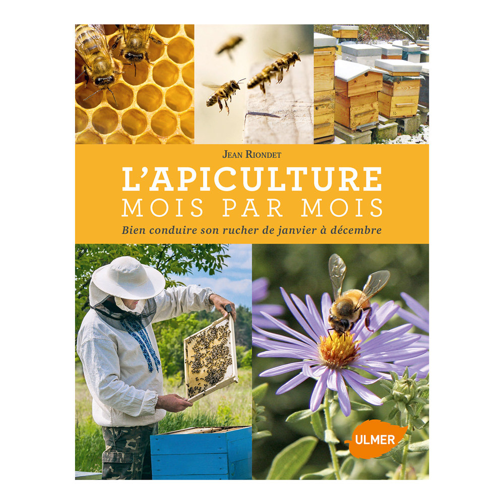
L'apiculture mois par mois — Jean Riondet (Ulmer)
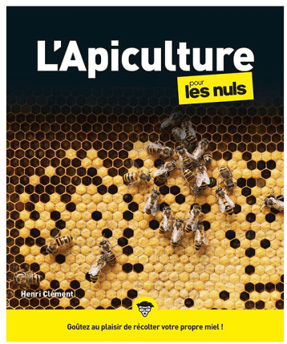
L'Apiculture pour les nuls — Henri Clément
Mes recherches — mes sources, mes observations
La présentation s'appuie sur des observations de terrain et une iconographie sourcée. Domaines cités par l'auteur :
« Protéger l'abeille, c'est protéger l'humanité. » — Merci de votre attention.
Archives — Documents d'origine
Le live en PDF
📄
Le diaporama complet de PhantomBlast est consultable ci-dessous, page par page, tel qu'il a été présenté en live. Deux versions : la v4 enrichie (la plus complète) et la version initiale.
Un superorganisme d'un million d'années, devenu sentinelle de la biodiversité.
De la guêpe prédatrice du Crétacé à la pollinisatrice indispensable d'aujourd'hui, l'abeille domestique conjugue une biologie d'une précision extrême et une organisation sociale sans chef. Ce dossier en conserve le récit complet, mot pour mot ; les corrections factuelles sont signalées en encadrés « anti-intox » et tracées dans l'appareil critique du collectif. Protéger l'abeille, c'est lire ce qu'elle nous apprend — sans l'enjoliver.
Réalisé parPhantomBlastÉtude « L'Abeille — Apis mellifera », édition enrichie · avec Abeillaud
Collectif
Empire contre Intox
Un collectif pour remettre du contexte, de la méthode et du sens critique dans la connaissance partagée. Ce dossier prolonge l'étude de PhantomBlast en une version lisible, structurée, vérifiée et partageable.